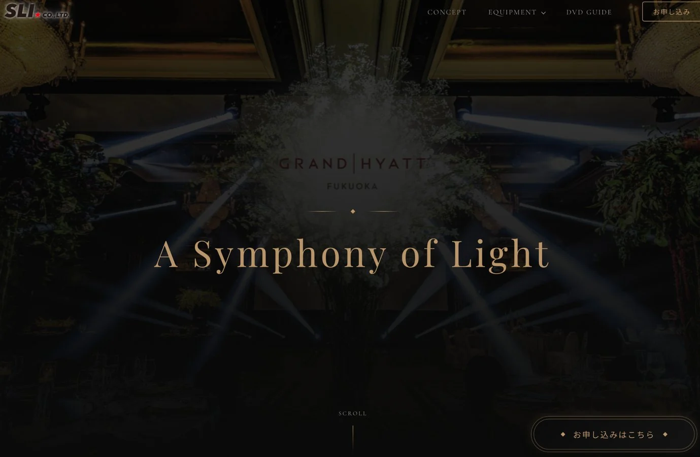

CASE 01 / WEB・ブランド制作A SYMPHONY OF LIGHT
FROM PAPER TO EXPERIENCE紙の資料を、
心が動く体験へ。
婚礼演出の魅力を、紙からWebへ。
商品紹介だけで終わらず、申込・通知・在庫・日程管理まで、一つの流れにつなぎました。
THE EXPERIENCE商品案内から申込・運用まで
A SYMPHONY OF LIGHT光と音の魅力を、
光と音の魅力を、
Webの体験へ。
写真や動画の選びやすさを、スタッフの声と実際の打ち合わせでの使用感をもとに改善しました。
RESULT / SALES+10%対象商品の売上 / 前年同時期比
WEDDING PRODUCTION婚礼演出の
ご案内大切な一日を、光と音で。
PRINT → HANDOUT → REPLENISHご案内大切な一日を、光と音で。
A SYMPHONY OF LIGHT

01 / WEB商品紹介LP魅力を伝える
02 / APPLY申込フォーム希望を受けとめる
03 / NOTICE自動応答・通知担当者へつなぐ
04 / MANAGE在庫・日程管理運用を支える
GASつながる、ひとつの流れ。IDEA → EXPERIENCE → OPERATION
ボタンで、制作と運用のつながりを見る
業務の流れを説明する概念アニメーションです。紙面はイメージ、Web画面は実際の制作物です。
MY DECISION / 私の判断
現場で試し、選びやすさを磨く。
紹介と申込を、一つの流れに。
判断とプロセスを読む
背景・課題
複合機で出力したコピー用紙の資料を配布する運用では、案内の魅力に限界があり、印刷や資料在庫の補充にもスタッフの時間がかかっていました。
担当したこと
企画・構成・文章・デザイン・実装・ホテルスタッフとの調整・運用まで、全工程を一貫して担当しました。
DECISIONS / 実現までの工夫
- 01
婚礼ならではの言葉の設計
縁起への配慮から句読点を使わず、余白・行間・文字組みで読みやすい文章表現に。
- 02
現場とつくるレビュー
社内・ホテルスタッフへのヒアリングと、打ち合わせでの使用感をもとに、写真の選定や動画選択時の挙動を改善。デザイン・文章はホテル側の最終承認を経て公開しました。
- 03
LPから申込管理まで拡張
ホテルからの追加要望に応え、GASで申込フォーム・自動応答・自動通知・在庫管理・日程管理を構築しました。
※売上10%増は対象商品の前年同時期比較。LP単独の因果効果を示すものではありません。